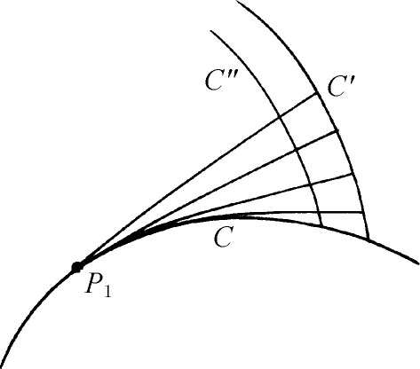
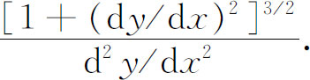
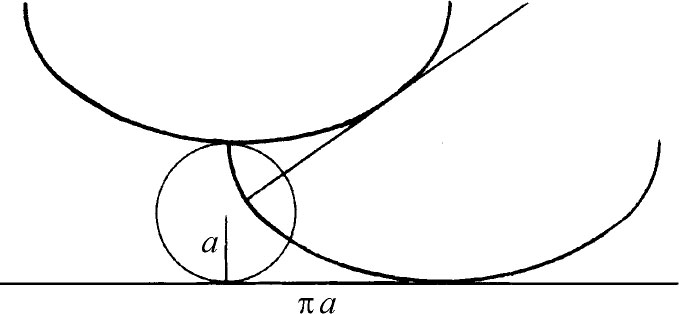
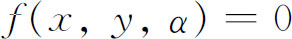
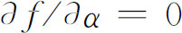

5．平面曲线
微积分对曲线研究的第一个应用是处理平面曲线。惠更斯引进了后来用微积分处理的几个概念，他用的是纯几何方法。他对光线研究和摆钟设计的兴趣推动了他在这方面的工作。1673年，在他的《钟表的振动》（Horologium Oscillatorium）第三章中他引进了平面曲线C的渐伸线。设想一条绳子从P1点往右绕在C上（图23.10）。端点P1固定在C上，绳的另一端不绕在C上但使绳子保持绷紧。自由端的轨迹C′是C的一条渐伸线。惠更斯证明了，在绳子的自由端，绳子垂直于轨迹C′。绳的每一点也描出一条渐伸线，例如C″也是一条渐伸线。但惠更斯证明了各条渐伸线不能互相接触。由于绳子在它刚要离开C点处与C相切，由此可见曲线切线族的每一个正交轨道是曲线的一条渐伸线。

图23.10
然后惠更斯讨论了平面曲线的渐屈线。设在曲线上P点处给了一条固定的法线，当一条相邻的法线移向这固定的法线时，这两条法线的交点在固定法线上达到一个极限位置，它就叫做曲线在P点的曲率中心。惠更斯证明了曲线上的点沿固定法线到这极限位置的距离（用现代的记号）是

这个长度是曲线在P点的曲率半径。连接每一法线上的曲率中心的轨迹叫做原曲线的渐屈线。因此，前面所说的曲线C就是它的任一渐伸线的渐屈线。在这部著作中惠更斯证明了摆线的渐屈线还是摆线，或者更确切地说，图23.11中下方摆线的左半部分的渐屈线是上方摆线的右半部分。欧拉在1764年解析地证明了这个定理(13)。对于惠更斯的摆钟工作来说，摆线的重要意义就在于：沿着摆线弧摆动的摆锤，不论其振幅是大是小，作一次完全摆动所用的时间是完全相同的。由于这个缘故，摆线又叫做等时曲线。

图23.11
牛顿在他的《解析几何》（Geometria Analytica）中（虽然该书的大部分大约写于1671年，但出版于1736年）也引进了曲率中心，作为P点的法线及其邻点法线的交点的极限点。然后牛顿说，圆心在曲率中心、半径等于曲率半径的圆是在P点与曲线最密接的圆；就是说，在曲线和最密接圆之间，不会有别的圆在P点和曲线相切。这个最密接的圆叫做密切圆，莱布尼茨在1686年的一篇文章(14)中已经用了“密切”这个术语。密切圆的曲率是其半径的倒数而且是曲线在P点的曲率。牛顿也给出了曲率的公式，并计算了一些曲线，包括摆线在内的曲率。他注意到曲线在拐点处的曲率为零。这些结果都是重复惠更斯的结果，但可能是牛顿想表明他能用解析方法来建立这些结果。
1691年约翰·伯努利着手研究平面曲线的课题，并得到了关于包络的一些新结果。奇恩豪森（Ehrenfried Walter von Tschirnhausen）在1682年曾引进过光线族的焦散（caustic），即光线族的包络。在1692年的《教师学报》中，约翰·伯努利得到了某些焦散的方程，例如当一束平行光线投射到球面镜上时，从球面镜上反射出来的光线的焦散的方程(15)。然后他解决了法蒂奥·德杜伊利埃（Nicholas Fatio de Duillier）向他提出的问题，即要找出一族抛物线的包络，这族抛物线是一门大炮以相同的初速度但以不同的仰角发射的炮弹的路径。约翰·伯努利证明了这包络是一条以炮位为焦点的抛物线。这个结果是托里拆利曾经从几何上证实了的。在1692年和1694年的《教师学报》上(16)，莱布尼茨给出了求一族曲线的包络的普遍方法。设曲线族（用我们的记号）是由

给出，其中α是曲线族的参数，这个方法要求在f＝0和
间消去α。洛必达的教科书《无穷小分析》（L'Analyse des infiniment petits，1696），帮助完成并传播了平面曲线的理论。